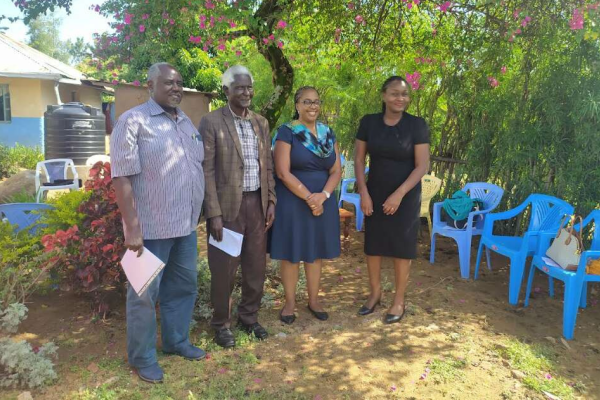
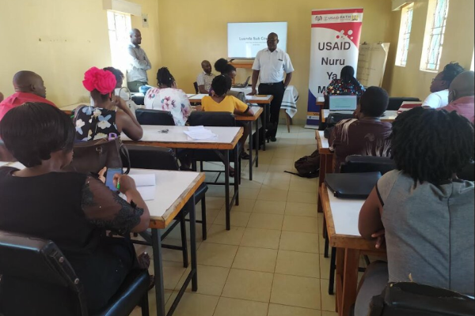
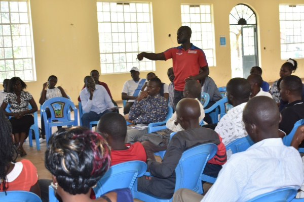
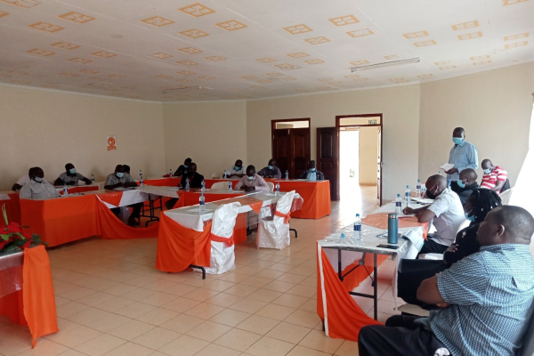
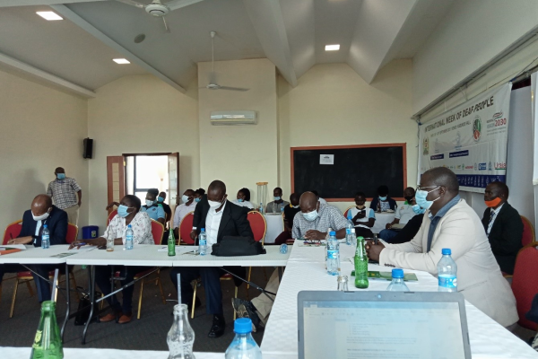
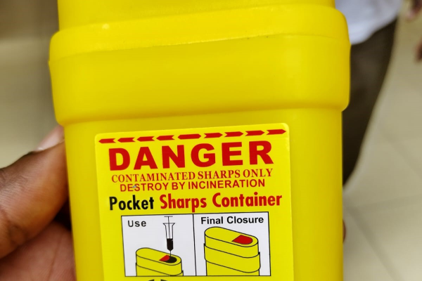
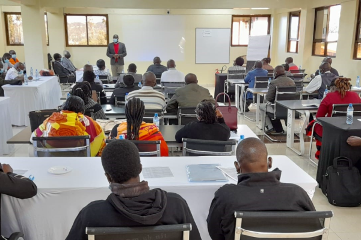
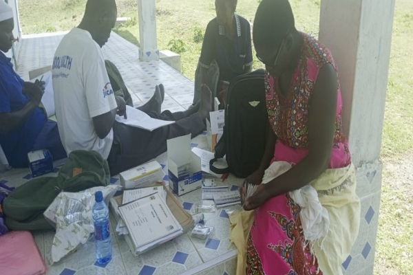
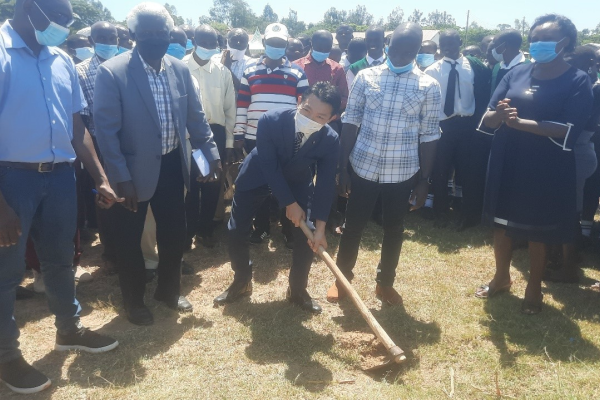
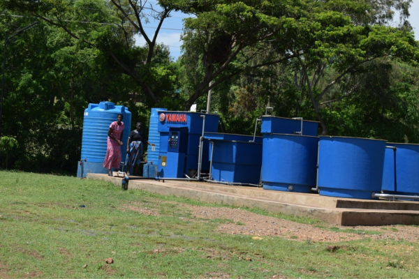

Giving every vulnerable child the future they deserve
Since March 2021, IDF Kenya has been implementing the USAID Nuru Ya Mtoto (Light of the Child) project across Homa Bay, Vihiga and Nyamira counties as a Local Implementing Partner in cooperative agreement with PATH Kenya. The programme is built around a simple but powerful conviction — that every child affected by HIV deserves to be Healthy, Safe, Stable and Schooled.
IDF's field teams deliver integrated case management to orphans and vulnerable children (OVC) and their households, working in close coordination with the Directorate of Children Services, Ministry of Health, and County Government structures. The programme is directly aligned with Kenya's national target of achieving 95-95-95 HIV outcomes — ensuring 95% of people living with HIV are diagnosed, 95% receive treatment, and 95% achieve viral suppression.
DREAMS Programme
Vihiga County is a DREAMS-targeted county under NYM, providing a comprehensive HIV prevention and social support package specifically designed for adolescent girls and young women — one of the most at-risk populations in the region.
Impact at a glance


Vihiga County

AGYW Safe Space
Empowering citizens to hold their county accountable
Kuimarisha Kaunti — "Strengthening the County" — is a governance and civic engagement project operating across all eight sub-counties of Homa Bay. IDF works to bridge the gap between county government services and the communities they are meant to serve, building structures that make accountability the norm rather than the exception.
The project trains community members, civil society actors and local leaders on their rights and responsibilities under devolution. IDF facilitates structured dialogue between citizens and county officials — creating platforms where service delivery failures can be raised constructively, and where government commitments are tracked and verified.
Ndovu Award Winner 2023
Presented once every ten years, the prestigious Ndovu Award was awarded to IDF for outstanding work in educating and mobilising Homa Bay citizens to actively participate in county governance and public service delivery.
Impact at a glance



Mbita Sub-County
Taking malaria treatment to the household doorstep
Between 2018 and 2021, IDF Kenya implemented the Global Fund Malaria Project as a sub-recipient under Amref Health Africa, reaching seven counties with a community case management model that put malaria diagnosis and treatment directly in the hands of Community Health Volunteers. The programme was a major contribution to Kenya's national goal of a "Malaria Free Kenya."
More than 1,140 CHVs across 114 Community Health Units were equipped with mRDT rapid diagnostic test kits and artemether-lumefantrine (AL) treatment. They were trained to identify suspected malaria cases during household visits, test on the spot, and dispense treatment — bringing the clinic to the community rather than making patients travel. The programme budget of Ksh 103,247,492 supported operations across Homa Bay, Meru, Tharaka Nithi, Kwale and Kirinyaga counties.
Data & Quality Systems
IDF facilitated data bundle provisions for SCHRIOs and airtime for CHEWs to maintain consistent uploads to the Kenya Health Information System (KHIS), ensuring real-time national malaria surveillance coverage across all seven project counties.
Project outcomes


Meru County

Kwale County
8,000 litres of clean water, every single day
In the Seka Kagwa community of Homa Bay County, access to safe drinking water has been transformed through a Japan-Kenya partnership that installed a Yamaha natural purification system capable of producing 8,000 litres of clean water daily. What was once a daily struggle against waterborne disease is now a reliable community resource — serving 15,000 people.
The Seka Kagwa project demonstrates how targeted infrastructure investment, combined with community management structures, can create sustainable change. The natural purification system draws on available water sources and processes them through a technology-driven filtration system with minimal chemical inputs, providing water that meets national safety standards.
Japan-Kenya Partnership
This project was made possible through the Embassy of Japan in Kenya's Grant Aid programme, which partners with Kenyan NGOs to deliver high-impact infrastructure projects in underserved communities — a model of bilateral cooperation at the community level.
Project impact


Daily Distribution